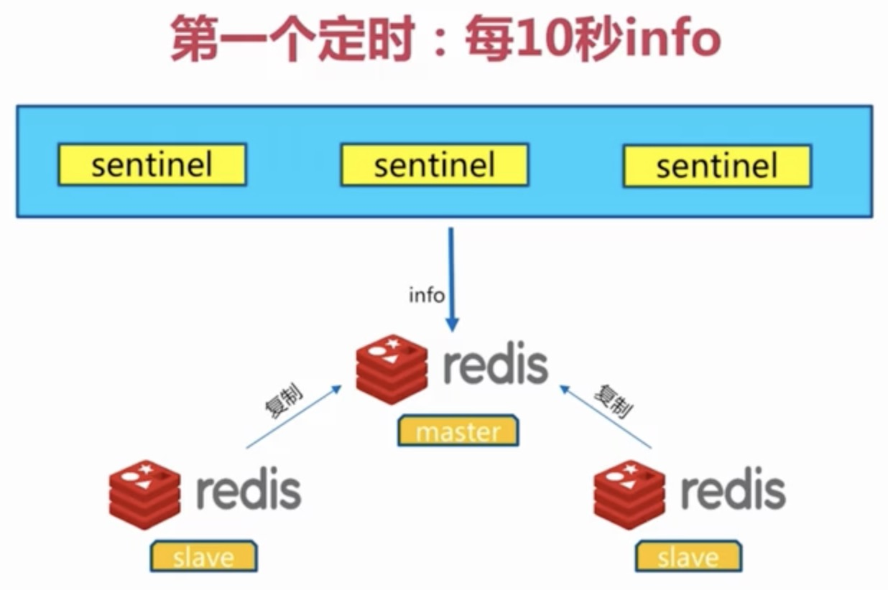
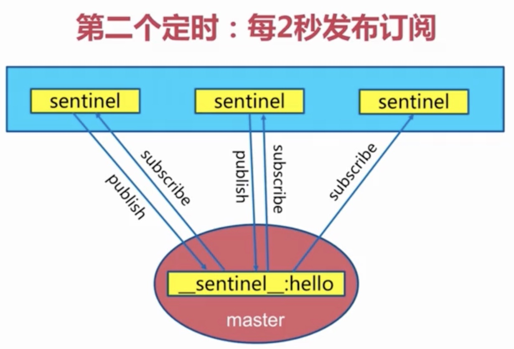
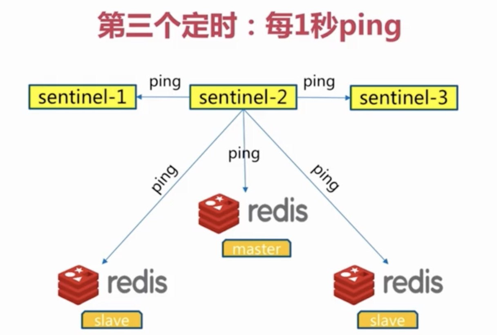
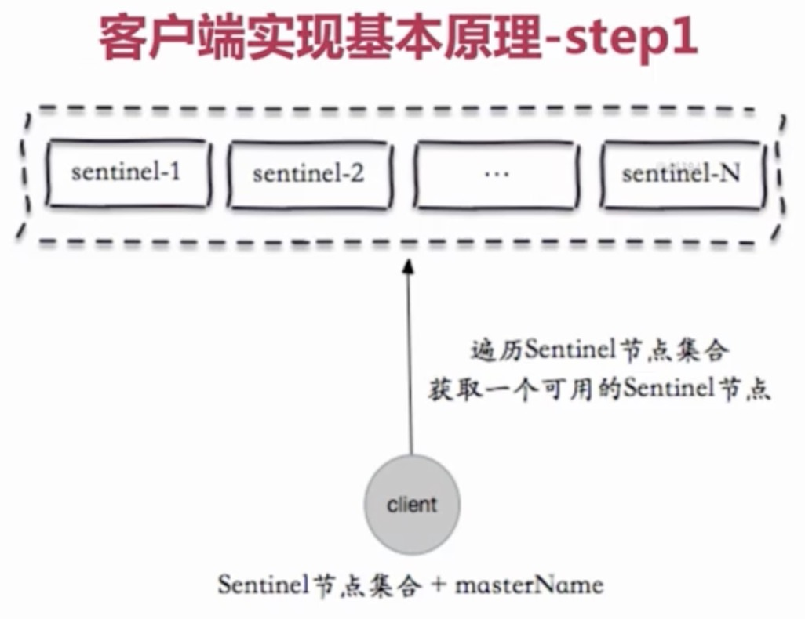
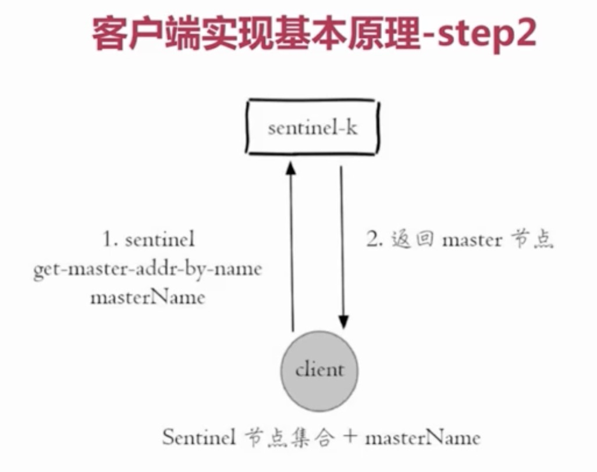
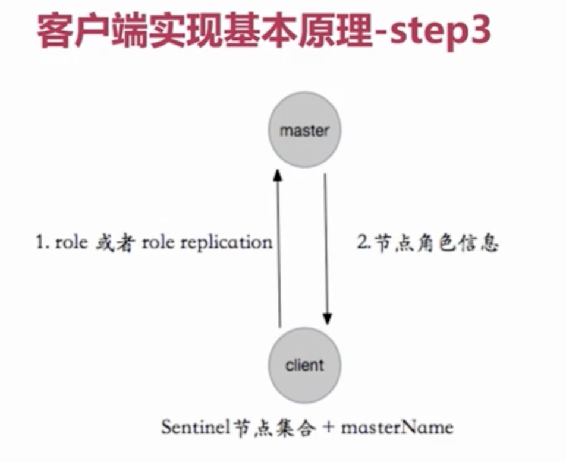
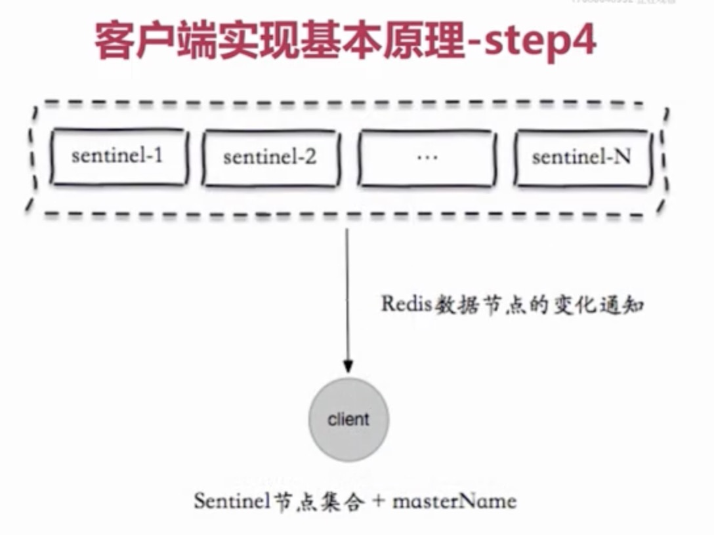
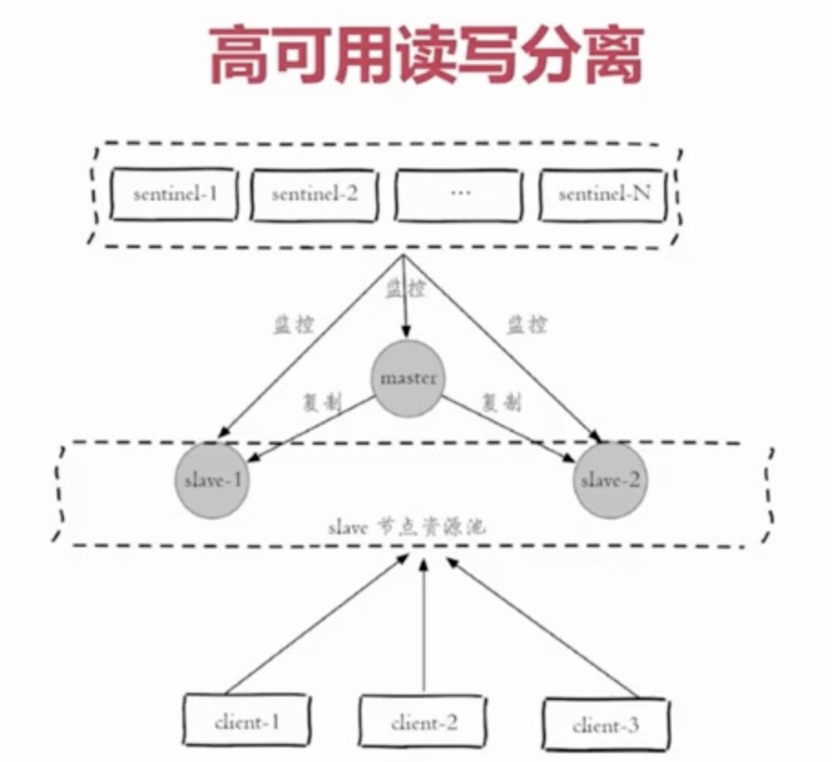
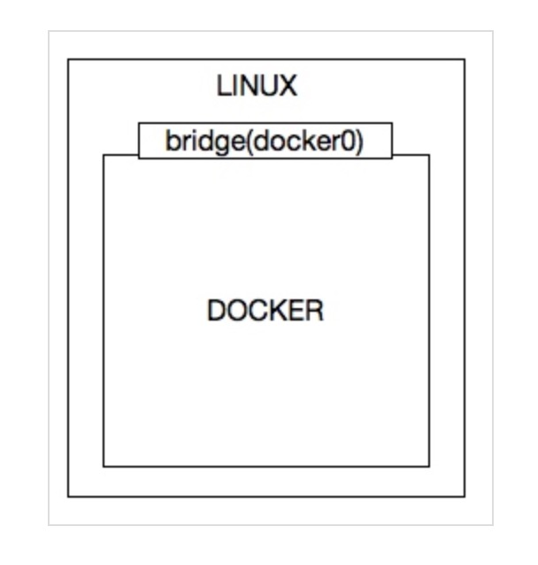
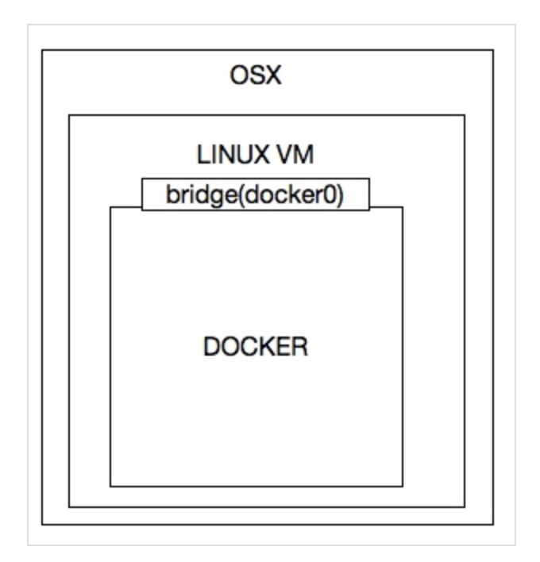

本文记录了在Mac上的Docker环境下安装部署Redis Sentinel集群并挂载外部配置和数据的操作步骤。通过前面文章可知，由于主从复制出现了故障，需要手动进行故障转移，同时写能力和存储能力有有限。所以Redis官方提供了Redis Sentinel部署方式提供高可用的解决方案。Redis Sentinel可以理解成一个特殊的Redis进程，它不存储数据，支持的命令也很有限， 只负责持续监控主从节点的健康，当主节点挂掉时，自动选择一个最优的从节点切换为主节点。客户端来连接集群时，会首先连接 sentinel，通过 sentinel 来查询主节点的地址，然后再去连接主节点进行数据交互。当主节点发生故障时，客户端会重新向 sentinel 要地址，sentinel 会将最新的主节点地址告诉客户端，这样应用程序将无需重启即可自动完成节点切换。Redis Sentinel可以同时监控多个Redis部署集群，通过设置maste目录就可以实现同时监控多个集群。
关注文末的公众号，后台私信获取完整的配置文件。
Redis Sentinel配置
我们搭建的Redis Sentinel集群包括三个sentinel节点，一个master节点和两个slave从节点，sentinel集群负责监控mymaster命名的redis主从复制集群，设置客观下线的投票数为2，来实现Redis Sentinel集群故障转移和切换。
第一种Redis Sentinel Host模式Docker Compose的配置:
1 2 3 4 5 6 7 8 9 10 11 12 13 14 15 16 17 18 19 20 21 22 23 24 25 26 27 28 29 30 31 32 33 34 35 36 37 38 39 40 41 42 43 44 45 46 47 48 49 50 51 52 53 54 55 56 57 58 59 60 61 62 63 64 65 66 67 68 69 70 71 72 73 74 75 76 77 78 79 80 81 version: "3.1" services: master: image: redis container_name: redis-master hostname: redis-master network_mode: host ports: - 6379 :6379 command: redis-server /etc/redis/redis.conf volumes: - "./redis-master/data:/data" - "./redis-master/conf/redis.conf:/etc/redis/redis.conf" environment: TZ: Asia/Shanghai slave_1: image: redis container_name: redis-slave_1 hostname: redis-slave_1 network_mode: host ports: - 6380 :6380 command: redis-server /etc/redis/redis.conf --slaveof 127.0 .0 .1 6379 volumes: - "./redis-slave_1/data:/data" - "./redis-slave_1/conf/redis.conf:/etc/redis/redis.conf" environment: TZ: Asia/Shanghai slave_2: image: redis container_name: redis-slave_2 hostname: redis-slave_2 network_mode: host ports: - 6381 :6381 command: redis-server /etc/redis/redis.conf --slaveof 127.0 .0 .1 6379 volumes: - "./redis-slave_2/data:/data" - "./redis-slave_2/conf/redis.conf:/etc/redis/redis.conf" environment: TZ: Asia/Shanghai sentinel_1: image: redis container_name: redis-sentinel_1 hostname: redis-sentinel_1 network_mode: host ports: - 26379 :26379 command: redis-sentinel /etc/redis/sentinel.conf --sentinel volumes: - "./redis-sentinel_1/conf/sentinel.conf:/etc/redis/sentinel.conf" - "./redis-sentinel_1/data:/data" environment: TZ: Asia/Shanghai sentinel_2: image: redis container_name: redis-sentinel_2 hostname: redis-sentinel_2 network_mode: host ports: - 26380 :26380 command: redis-sentinel /etc/redis/sentinel.conf --sentinel volumes: - "./redis-sentinel_2/conf/sentinel.conf:/etc/redis/sentinel.conf" - "./redis-sentinel_2/data:/data" environment: TZ: Asia/Shanghai sentinel_3: image: redis container_name: redis-sentinel_3 hostname: redis-sentinel_3 network_mode: host ports: - 26381 :26381 command: redis-sentinel /etc/redis/sentinel.conf --sentinel volumes: - "./redis-sentinel_3/conf/sentinel.conf:/etc/redis/sentinel.conf" - "./redis-sentinel_3/data:/data" environment: TZ: Asia/Shanghai
第二种Redis Sentinel Bridge模式Docker Compose的配置：
1 2 3 4 5 6 7 8 9 10 11 12 13 14 15 16 17 18 19 20 21 22 23 24 25 26 27 28 29 30 31 32 33 34 35 36 37 38 39 40 41 42 43 44 45 46 47 48 49 50 51 52 53 54 55 56 57 58 59 60 61 62 63 64 65 66 67 68 69 70 71 72 73 74 75 76 77 78 79 80 81 82 83 84 85 86 87 88 89 90 91 92 93 94 95 96 97 version: '3.1' services: master: image: redis container_name: redis-master hostname: redis-master command: redis-server /etc/redis/redis.conf volumes: - "./redis-master/data:/data" - "./redis-master/conf/redis.conf:/etc/redis/redis.conf" environment: TZ: Asia/Shanghai ports: - "6379:6379" slave_1: image: redis container_name: redis-slave_1 hostname: redis-slave_1 command: redis-server /etc/redis/redis.conf --slaveof redis-master 6379 volumes: - "./redis-slave_1/data:/data" - "./redis-slave_1/conf/redis.conf:/etc/redis/redis.conf" environment: TZ: Asia/Shanghai links: - master: redis-master ports: - "6380:6379" slave_2: image: redis container_name: redis-slave_2 hostname: redis-slave_2 command: redis-server /etc/redis/redis.conf --slaveof redis-master 6379 volumes: - "./redis-slave_2/data:/data" - "./redis-slave_2/conf/redis.conf:/etc/redis/redis.conf" environment: TZ: Asia/Shanghai links: - master: redis-master ports: - "6381:6379" sentinel_1: image: redis container_name: redis-sentinel_1 hostname: redis-sentinel_1 command: redis-sentinel /etc/redis/sentinel.conf --sentinel volumes: - "./redis-sentinel_1/conf/sentinel.conf:/etc/redis/sentinel.conf" - "./redis-sentinel_1/data:/data" environment: TZ: Asia/Shanghai links: - master: redis-master - slave_1 - slave_2 ports: - "26379:26379" sentinel_2: image: redis container_name: redis-sentinel_2 hostname: redis-sentinel_2 command: redis-sentinel /etc/redis/sentinel.conf --sentinel volumes: - "./redis-sentinel_2/conf/sentinel.conf:/etc/redis/sentinel.conf" - "./redis-sentinel_2/data:/data" environment: TZ: Asia/Shangha links: - master: redis-master - slave_1 - slave_2 ports: - "26380:26379" sentinel_3: image: redis container_name: redis-sentinel_3 hostname: redis-sentinel_3 command: redis-sentinel /etc/redis/sentinel.conf --sentinel volumes: - "./redis-sentinel_3/conf/sentinel.conf:/etc/redis/sentinel.conf" - "./redis-sentinel_3/data:/data" environment: TZ: Asia/Shanghai links: - master: redis-master - slave_1 - slave_2 ports: - "26381:26379"
验证搭建成功
1 2 3 4 5 6 7 8 9 10 11 12 13 14 15 16 17 # 登录主节点redis-master查看info信息docker exec -it redis-master redis-cli -h 127.0.0.1 -p 6379 # 查看主节点info replication信息info replication # Replicationrole:master connected_slaves:2 slave0:ip=172.18.0.3,port=6379,state=online,offset=834002,lag=0 slave1:ip=172.18.0.4,port=6379,state=online,offset=834002,lag=0 # 登录Sentinel集群中redis-sentinel_1查看info信息docker exec -it redis-sentinle_1 redis-cli -h 127.0.0.1 -p 26379 # 查看哨兵集群中一个节点的info replication信息info sentinel master0:name=mymaster,status=ok,address=172.18.0.2:6379,slaves=2,sentinels=3
故障转移演示
故障转移的步骤
第一步：主观下线和客观下线
主观下线：每个sentinel节点对Redis节点失败的"偏见"
第二步：领导者选举
原因：只有一个sentinel节点完成故障转移
第三步：故障转移(sentinel领导者节点完成)
从slave节点中选出一个合适的节点作为新的master节点；
其中选择合适的slave节点：
1 2 3 4 使用 docker-compose up -d 部署运行 使用 docker-compose pause redis-master 可以模拟对应的 Redis 实例不可用 使用 docker-compose pause redis-sentinel_1 可以模拟对应的 Sentinel 实例不可用 使用 docker-compose unpause redis-master 将暂停的容器恢复运行
故障转移日志分析
下面展示故障转移过程中sentinel节点的日志记录，当redis-master节点不可用时，redis-slave_2节点被选举为master节点，redis-slave_1节点从新的master节点同步数据。但是由于故障发现及转移需要一定时间，这时候客户端连接还是会受到影响，等到故障完全转移成功之后，客户端能够继续连接操作redis。当redis-master节点恢复运行之后，redis-master将成为redsi-slave_2的从节点，从新的master节点同步数据。
1 2 3 4 5 6 7 8 9 10 11 12 13 14 15 16 17 18 19 20 21 22 23 1:X 25 Apr 2020 16:45:19.926 # +sdown master mymaster 172.18.0.2 6379 1:X 25 Apr 2020 16:45:19.990 # +odown master mymaster 172.18.0.2 6379 #quorum 2/2 1:X 25 Apr 2020 16:45:19.993 # +new-epoch 1 1:X 25 Apr 2020 16:45:19.995 # +try-failover master mymaster 172.18.0.2 6379 1:X 25 Apr 2020 16:45:20.004 # +vote-for-leader ecb11c27c44887abfd777f53c5c40e921c160981 1 1:X 25 Apr 2020 16:45:20.024 # 43d9b045a34953647743748fd1899345dfbd422e voted for ecb11c27c44887abfd777f53c5c40e921c160981 1 1:X 25 Apr 2020 16:45:20.026 # 532977c0291754b19795d1539f3bb4a781ee11ba voted for ecb11c27c44887abfd777f53c5c40e921c160981 1 1:X 25 Apr 2020 16:45:20.061 # +elected-leader master mymaster 172.18.0.2 6379 1:X 25 Apr 2020 16:45:20.064 # +failover-state-select-slave master mymaster 172.18.0.2 6379 1:X 25 Apr 2020 16:45:20.124 # +selected-slave slave 172.18.0.4:6379 172.18.0.4 6379 @ mymaster 172.18.0.2 6379 1:X 25 Apr 2020 16:45:20.126 * +failover-state-send-slaveof-noone slave 172.18.0.4:6379 172.18.0.4 6379 @ mymaster 172.18.0.2 6379 1:X 25 Apr 2020 16:45:20.215 * +failover-state-wait-promotion slave 172.18.0.4:6379 172.18.0.4 6379 @ mymaster 172.18.0.2 6379 1:X 25 Apr 2020 16:45:21.039 # +promoted-slave slave 172.18.0.4:6379 172.18.0.4 6379 @ mymaster 172.18.0.2 6379 1:X 25 Apr 2020 16:45:21.041 # +failover-state-reconf-slaves master mymaster 172.18.0.2 6379 1:X 25 Apr 2020 16:45:21.117 * +slave-reconf-sent slave 172.18.0.3:6379 172.18.0.3 6379 @ mymaster 172.18.0.2 6379 1:X 25 Apr 2020 16:45:22.055 * +slave-reconf-inprog slave 172.18.0.3:6379 172.18.0.3 6379 @ mymaster 172.18.0.2 6379 1:X 25 Apr 2020 16:45:22.058 * +slave-reconf-done slave 172.18.0.3:6379 172.18.0.3 6379 @ mymaster 172.18.0.2 6379 1:X 25 Apr 2020 16:45:22.107 # -odown master mymaster 172.18.0.2 6379 1:X 25 Apr 2020 16:45:22.110 # +failover-end master mymaster 172.18.0.2 6379 1:X 25 Apr 2020 16:45:22.113 # +switch-master mymaster 172.18.0.2 6379 172.18.0.4 6379 1:X 25 Apr 2020 16:45:22.115 * +slave slave 172.18.0.3:6379 172.18.0.3 6379 @ mymaster 172.18.0.4 6379 1:X 25 Apr 2020 16:45:22.118 * +slave slave 172.18.0.2:6379 172.18.0.2 6379 @ mymaster 172.18.0.4 6379 1:X 25 Apr 2020 16:45:52.123 # +sdown slave 172.18.0.2:6379 172.18.0.2 6379 @ mymaster 172.18.0.4 6379
Redis Sentinel内部原理
三个定时任务
每10秒每个sentinel对master和slave执行info

每2秒每个sentinel通过master节点的channel交换信息(pub/sub)

每1秒每个sentinel对其他sentinel和redis执行ping

Java和Python客户端代码测试
客户端高可用的原理




Java客户端
1 2 3 4 5 6 7 8 9 10 11 12 JedisSentinelPool sentinelPool = new JedisSentinelPool(masterName, sentinelSet, poolConfig, timeout); Jedis jedis = null ; try { jedis = redisSentinelPool.getResource(); } catch (Exception e) { logger.error(e.getMessage(), e); } finally { if (jedis != null ) { jedis.close(); } }
Python客户端
1 2 3 4 5 6 7 8 9 10 11 12 13 14 15 16 17 from redis.sentinel import Sentinelsentinel = Sentinel([('localhost' , 26379 ), ('localhost' , 26380 ), ('localhost' , 26381 )], socket_timeout=0.1 ) master = sentinel.discover_master('mymaster' ) slaves = sentinel.discover_slaves('mymaster' ) print(master) print(slaves) master = sentinel.master_for('mymaster' , password='password' , socket_timeout=0.1 ) slave = sentinel.slave_for('mymaster' , password='password' , socket_timeout=0.1 ) w_ret = master.set('foo' , 'bar' ) print(w_ret) r_ret = slave.get('foo' ) print(r_ret)
高可用读写分离
可以借助Redis Sentinel集群来实现高可用读写分离，但是需要客户端自定义实现监控slave节点资源池的变化信息，还需要监控master节点转为slave节点的变化信息、slave节点转为master节点的变化信息以及slave节点主观下线的变化信息等，客户端需要订阅关注slave节点资源池列表的变动信息，实现客户端高可用。整体的框架图如下：

Mac上宿主机和容器网络互通
Mac上宿主机无法Ping通容器服务
Docker 在 Linux 的自带内核上实现的，所以 Docker 在 Linux 上安装后， 会创建一个 docker0 的虚拟网卡，Linux 宿主机和 Docker 中的容器通过该网卡进行通信。

Docker 在 Mac 中的实现是通过 Hypervisor 创建一个轻量级的虚拟机，然后 将 docker 放入到虚拟机中实现。Mac OS 宿主机和 Docker 中的容器通过 /var/run/docker.sock 这种 socket 文件来通信，所以在 Mac OS 中 ping 容器的 IP，在容器中 ping 宿主机的 IP 就不通。

容器内访问宿主机，在 Docker 18.03 过后推荐使用 特殊的 DNS 记录 host.docker.internal 访问宿主机。但是注意，这个只是在 Docker Desktop for Mac 中作为开发时有效。 网关的 DNS 记录: gateway.docker.internal，这个DNS名称将被解析到主机的内部IP。这只是为了开发目的，不要用于非Mac版Docker的生产环境。
宿主机访问容器，使用本机 localhost 端口映射功能，使用 –publish（单个端口）, -p（单个端口）, -P（所有端口） 将本机的端口和容器的端口映射。
安装VPN解决网络互连问题
本文通过Docker搭建Redis Sentinel集群，需要在宿主机访问容器中的redis集群，但是现在无法ping通网络，所以就需要通过代理的方式来转发请求，因为在Mac上本地开发才会有这个问题，Linux本身不存在这个问题，所以就采用一种非常快捷的方式安装VPN客户端，建立宿主机和容器之间的网络连接。Github上有一个封装的docker-mac-network镜像，下面的安装部署的过程：
第一步：
第二步：https://github.com/wojas/docker-mac-network.git
第三步：
第四步：
第五步：
第六步：
参考链接
使用DockerCompose本地部署基于Sentinel的高可用Redis集群 MAC DOCKER无法ping通容器解决方案
关注【憨才好运】微信公众号，了解更多精彩内容⬇️⬇️⬇️